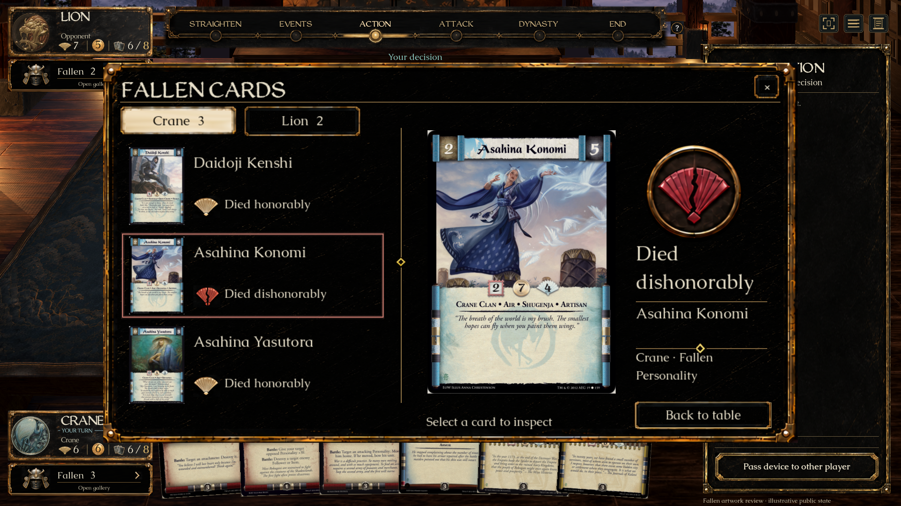
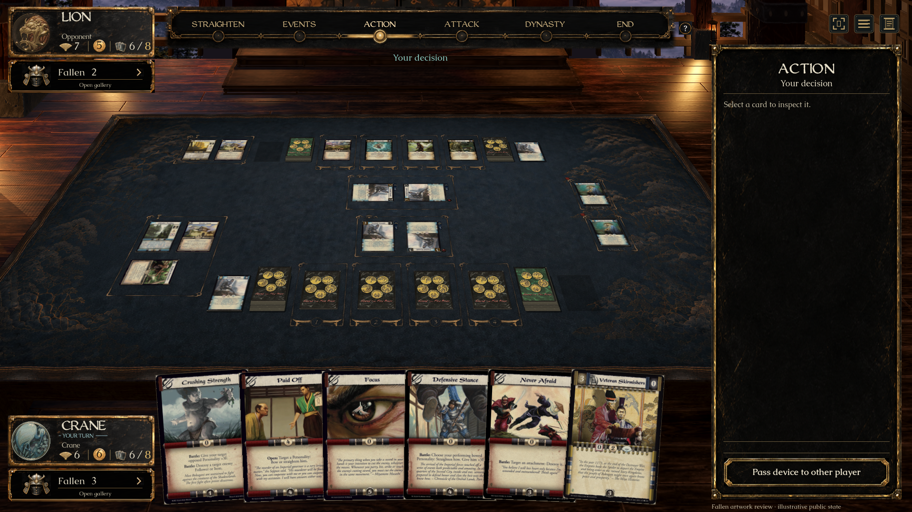
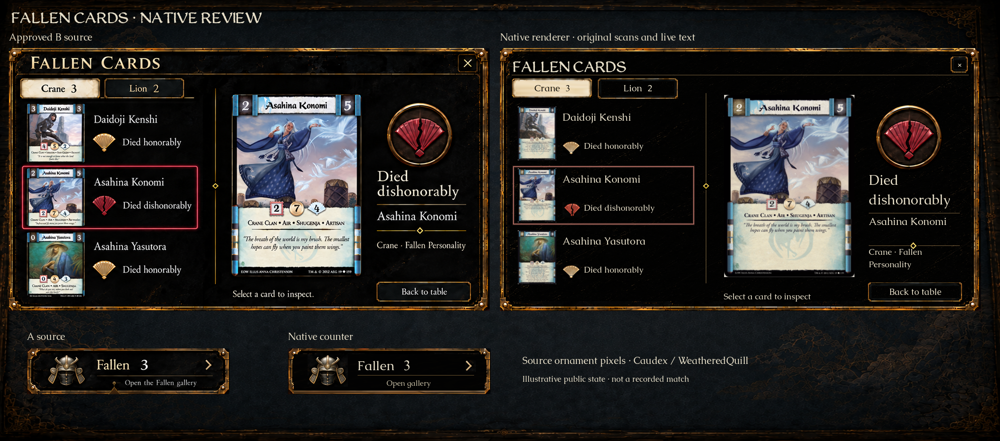
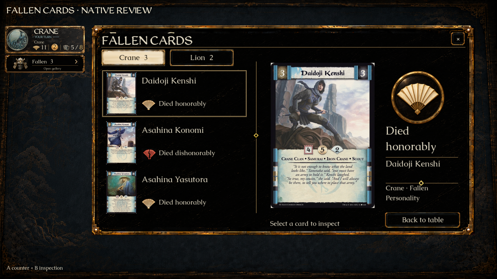
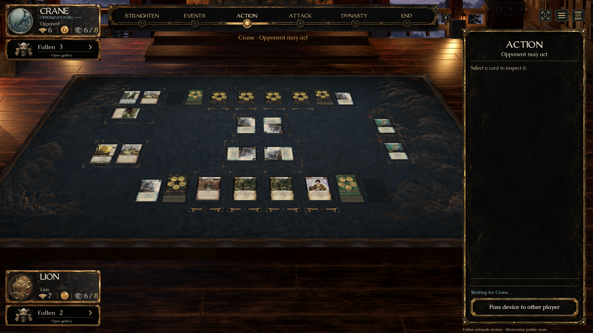
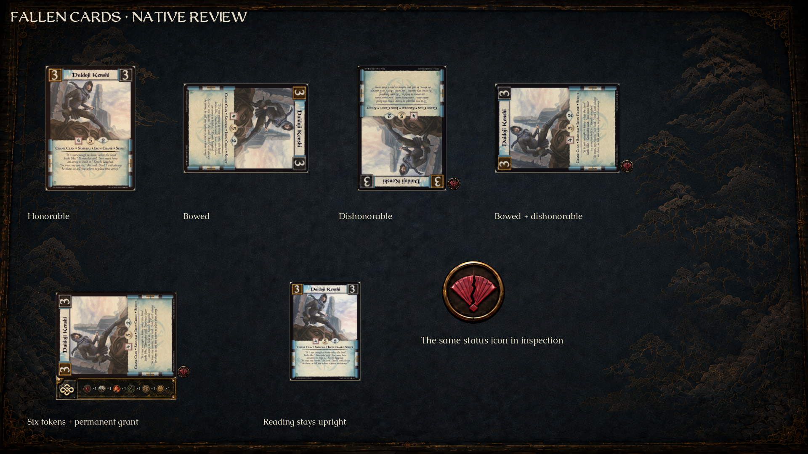
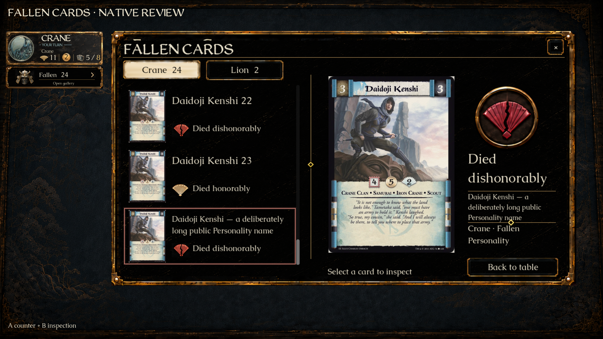
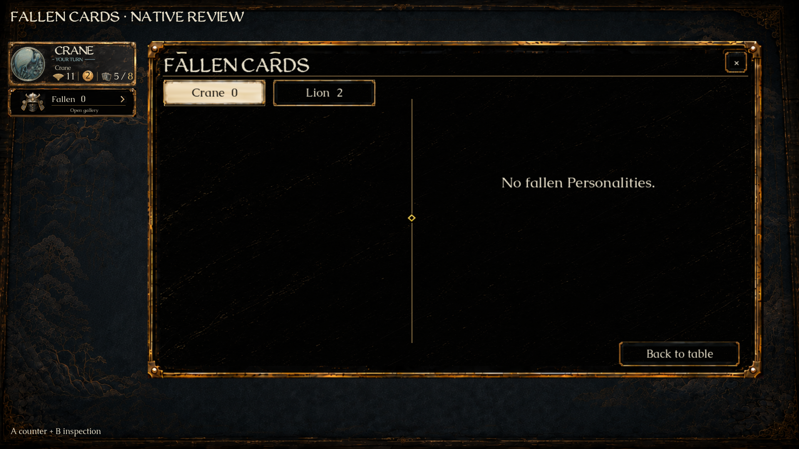

FALLEN CARDS
A’s counter with B’s inspection panel, rendered in Godot. Original source ornaments, live Caudex text, WeatheredQuill headings and complete original card faces.
Review fixtures use illustrative public state; they are not a recorded match. Existing black lacquer menus, the fortress hall, and the separate Removed from the Game pile are retained.
Launch this checkout · Validation and limits · Built-in imagegen finishing prompt and saved asset path
In-game inspection
In-game counters and dishonor
Approved source / native renderer
Honorable death
In-game at 1280 × 720Opposite seat
Bowing, dishonor and upright inspection
24 entries and a long name
Empty Fallen pile
The comparison preserves the actual source ornaments. Live typography, original card proportions and dynamic data differ from imagegen’s illustrative screen.